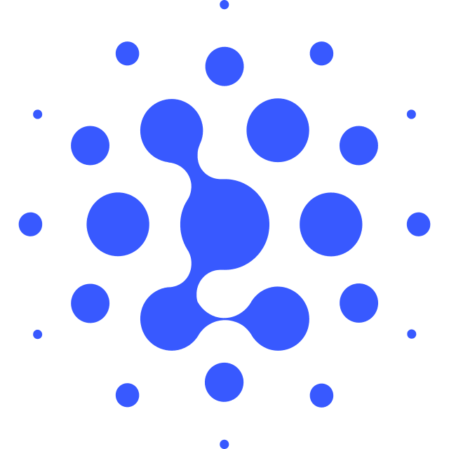

Agentic Verifier
A judge can tell you a solution is wrong. It can't tell
you why — showing the failing input would leak the secret tests that
make it trustworthy, and every ranker, majority vote, or LLM-as-judge
inherits that same blind spot: a verdict, never a witness. Arbiter
(Agentic Reinforcement-learned
Bug-finding Interactive Test ExamineR)
is a verifier trained to do both — read a problem and one candidate solution,
decide Accept or Reject, and on rejection hand back a concrete input that
breaks the code, not just a score.
Training Details
TODO: describe how Arbiter was trained — the base
model, the reinforcement-learning setup that rewards finding a valid
counterexample, the data it was trained on, and the compute budget.
Benchmark Results
This page reports an empirical test of what that
capability is worth: whether Arbiter-gated refinement, revising against a
verifier's counterexample rather than a scalar reward, is by itself
sufficient for competitive programming. gpt-oss-120b attempts every
IOI 2026 subtask and revises against Arbiter's feedback round by
round, under a 5-round budget, until a trajectory is
Accepted and submitted. That refinement
loop alone clears IOI 2026's gold-medal score line.
| Model | UOJ-Bench (Hacking) | USACO-Judge | Overall Hack Succ. |
||||||
|---|---|---|---|---|---|---|---|---|---|
| ✓ Label Acc. | ⛊ Hack Succ. | ✓ Label Acc. | ⛊ Hack Succ. | ||||||
| Easy | Hard | Easy | Hard | Easy | Hard | Easy | Hard | ||
| ⚡ Non-agentic · single-shot | |||||||||
 Qwen3.6-35B-A3B Qwen3.6-35B-A3B |
86.85 | 87.56 | 16.70 | 10.85 | 66.42 | 64.55 | 32.04 | 21.65 | 16.20 |
 GPT-OSS-120B GPT-OSS-120B |
79.12 | 77.05 | 29.09 | 20.07 | 60.74 | 66.88 | 33.89 | 36.84 | 26.72 |
 DeepSeek-V4-Flash-Preview DeepSeek-V4-Flash-Preview |
73.49 | 73.08 | 33.49 | 22.03 | 74.89 | 68.64 | 55.00 | 41.52 | 31.44 |
| Qwen3.5-397B-A17B |
88.87 | 88.33 | 41.68 | 30.78 | 85.31 | 74.23 | 77.31 | 58.88 | 42.97 |
 GLM-5.2 |
80.17 | 76.77 | 65.34 | 57.33 | 94.07 | 80.63 | 91.16 | 79.03 | 66.47 |
 Kimi-K2.5 Kimi-K2.5 |
72.44 | 68.66 | 46.76 | 30.95 | 83.33 | 72.86 | 70.56 | 57.24 | 43.30 |
| DeepSeek-V4-Pro-Preview |
76.06 | 75.45 | 51.15 | 38.94 | 90.74 | 82.86 | 84.85 | 70.95 | 52.16 |
 Claude-Opus-4.8 Claude-Opus-4.8 |
84.97 | 75.72 | 77.04 | 67.06 | 94.81 | 82.38 | 94.48 | 87.61 | 75.86 |
| GPT-5.5 |
91.86 | 89.85 | 78.71 | 77.01 | 94.44 | 90.79 | 90.66 | 91.97 | 81.59 |
| ⚙ Agentic · tool-using | |||||||||
| Qwen3.6-35B-A3B |
71.82 | 67.43 | 41.34 | 31.47 | 85.56 | 65.34 | 79.44 | 45.88 | 40.79 |
| DeepSeek-V4-Flash-Preview |
65.55 | 63.18 | 56.37 | 49.35 | 96.30 | 77.62 | 92.78 | 65.27 | 57.92 |
 Arbiter (Ours) Arbiter (Ours) |
87.55 | 83.39 | 61.48 | 50.66 | 94.17 | 84.48 | 96.64 | 79.38 | 62.91 |
Results on UOJ-Bench (Hacking) and USACO-Judge,
reported by difficulty split (Easy / Hard) and grouped by inference mode:
non-agentic (⚡, single-shot) versus agentic (⚙, tool-using). Bold =
best in column, underline = runner-up. Arbiter (35B) matches or beats
models up to ~45× larger.
IOI Refinement
On IOI 2026 itself, gpt-oss-120b revises each candidate
against Arbiter's counterexample under a 5-round budget. Capping refinement
at round R shows how quickly the verifier's feedback pays off.
One round of refinement does most of the work.
Capping Arbiter-gated refinement at round R: score jumps
229 → 347 (clearing gold) from a single counterexample, reaching
376 by R5 — while judge submissions grow only gently (24 → 32), so
the gain is bought cheaply.
 IOI Artifacts
IOI Artifacts
Every score above is backed by its raw data. Click a
subtask to open its fan of 50 trajectories, then any node for the verifier's
full turn-by-turn review, or the icon for the program that
round submitted and the reasoning that wrote it. The badge beside a problem's
score opens its merged final submission.
icon for the program that
round submitted and the reasoning that wrote it. The badge beside a problem's
score opens its merged final submission.
Each row is one trajectory; each column a round. A node shows the
verifier's verdict and the judge's score in that subtask's
points. The under each square opens the program that round submitted, together
with the reasoning that wrote it.
ACAccepted25/25
octagon = the one round this trajectory submitted ·
green = full marks
ACAccepted2/25
orange = submitted but short — the
verifier approved code the judge did not
WAWrong Answer0/25
circle, grey score = still refining, nothing submitted that round
WAWrong Answer25/25
already worth full marks, sent round again anyway
--not reviewed--
the round exists but no verdict was recorded
#2
green row number = this trajectory solved the subtask (accepted
and full marks)
row ending: SUBMITTED spent its one submission ·
early stopped another trajectory had already solved the subtask ·
round-5 fallback ran the whole budget without being accepted
under each square opens the program that round submitted, together
with the reasoning that wrote it.
ACAccepted25/25
octagon = the one round this trajectory submitted ·
green = full marks
ACAccepted2/25
orange = submitted but short — the
verifier approved code the judge did not
WAWrong Answer0/25
circle, grey score = still refining, nothing submitted that round
WAWrong Answer25/25
already worth full marks, sent round again anyway
--not reviewed--
the round exists but no verdict was recorded
#2
green row number = this trajectory solved the subtask (accepted
and full marks)
row ending: SUBMITTED spent its one submission ·
early stopped another trajectory had already solved the subtask ·
round-5 fallback ran the whole budget without being accepted
BibTeX
@misc{deng2026arbiter,
author = {Zheye Deng and Sha Li and Changlong Yu and Xin Liu and
Qin Lu and Priyanka Nigam and Yangqiu Song},
title = {Arbiter: An Agentic Verifier for Competitive Programming Beyond Score},
year = {2026},
howpublished = {HKUST and Amazon},
note = {https://github.com/horizon-llm/IOI2026}
}